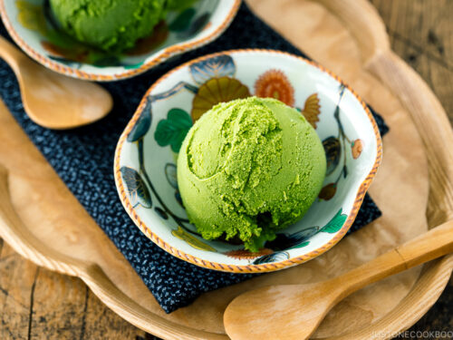

Matcha Ice Cream
Matcha ice cream is a delightful and vibrant dessert renowned for its unique and refreshing taste, created by blending the rich, earthy flavors of matcha powder with the creamy texture of ice cream. This fusion of traditional Japanese green tea and the indulgent creaminess of ice cream has gained global recognition, captivating the palates of dessert enthusiasts and tea lovers alike.
The history of matcha can be traced back to ancient Japan, where it was introduced as an integral part of the revered Japanese tea ceremony, or chanoyu, during the 12th century. Matcha, a finely ground powder of specially grown and processed green tea leaves, was traditionally used by Buddhist monks and samurai warriors to promote focus, clarity, and a sense of calm during meditation and long periods of contemplation.
The cultivation and preparation of matcha involve meticulous shading of tea plants before harvest, steaming and drying the tender leaves, and then stone grinding them into a fine, vibrant green powder. The resulting matcha powder is known for its distinctive flavor profile, characterized by its umami richness, vegetal notes, and a slight bitterness that culminates in a lingering sweetness.
Matcha's introduction to the world of desserts, including the creation of matcha ice cream, marks a contemporary adaptation of this traditional ingredient, blending centuries-old culinary practices with modern and global dessert trends. As matcha's popularity continues to soar, matcha ice cream has become a symbol of the harmonious fusion of Japanese culinary heritage and global dessert innovation, celebrated for its rich cultural significance and unique gastronomic appeal.